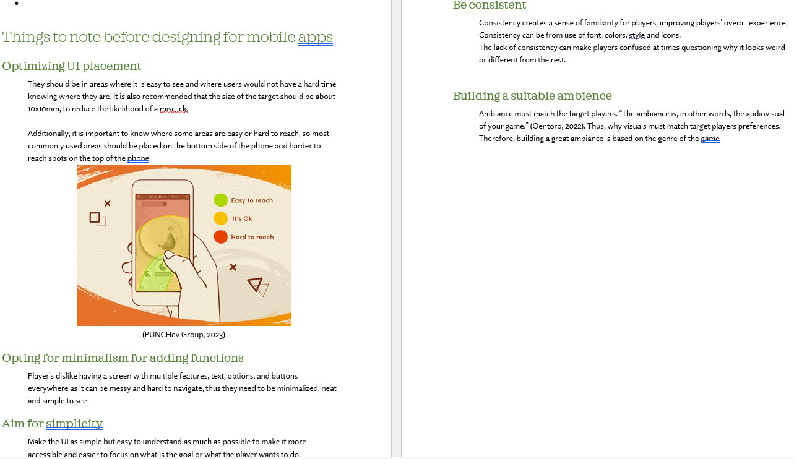
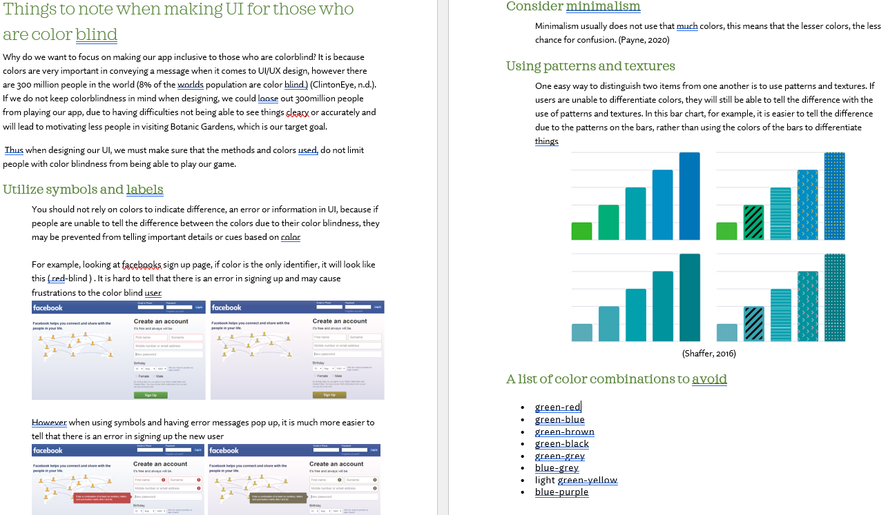
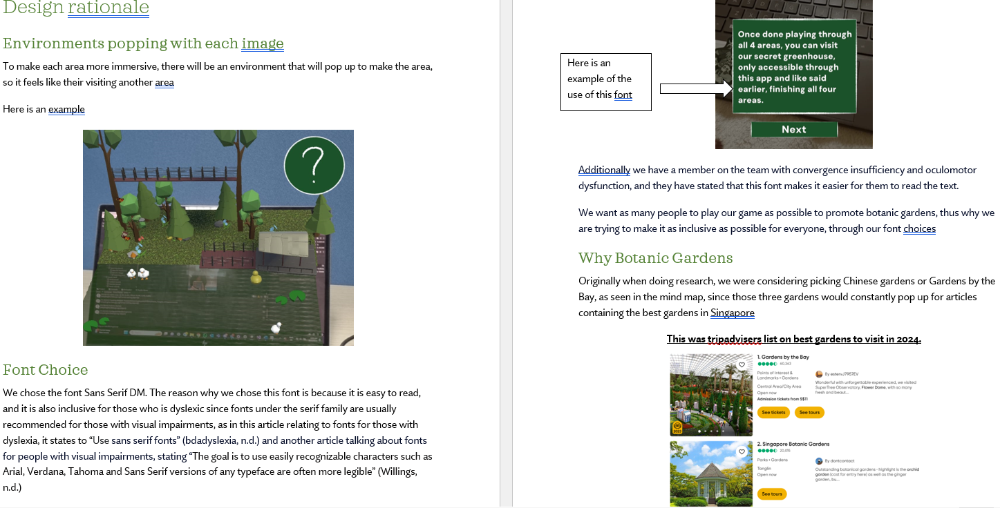
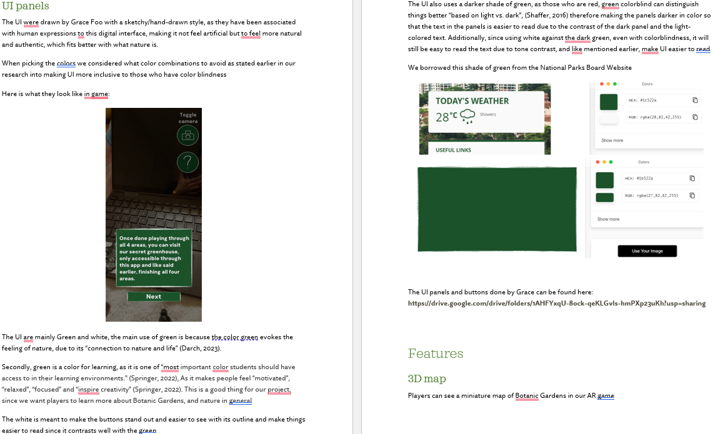
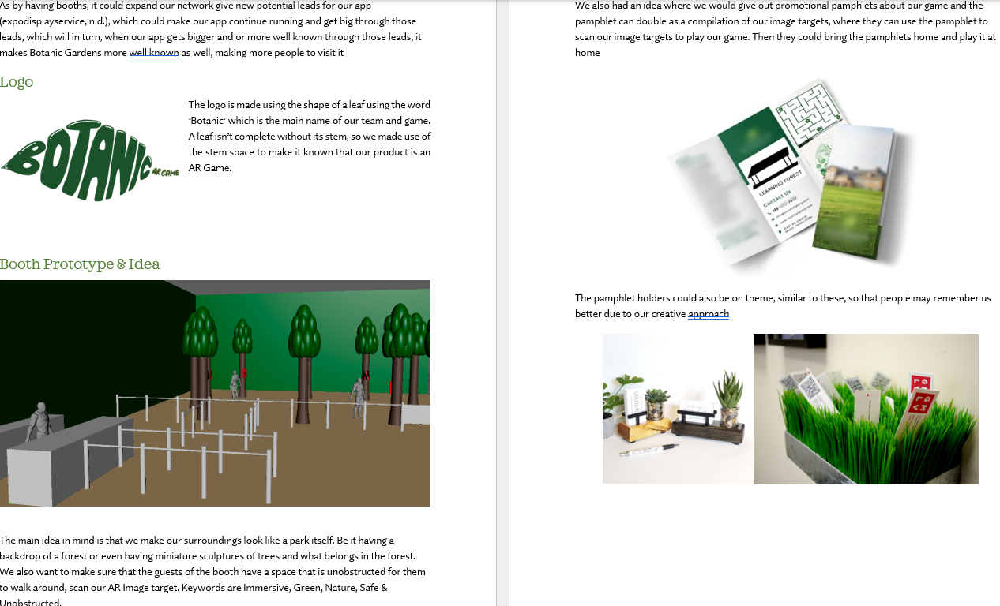
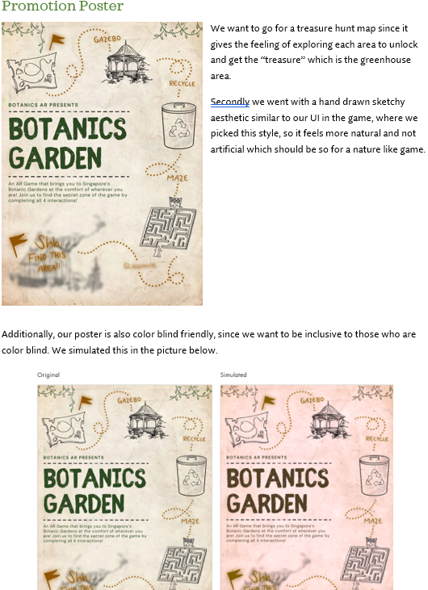
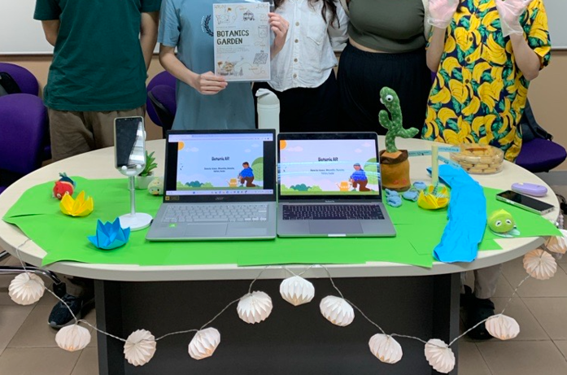

Botanic Gardens AR is an mobile AR game based on Botanic Gardens Singapore. We aimed to bring an educational and unique approach to teaching users about the nature, and history of the Gardens. This uses multiple interactions, which unlocks a secret area when completed. The interactions start from the virtual 3D map, tapping on small plants to see clues, playing through hedge mazes and learning how to recycle.
Botanic Gardens AR is an mobile AR game based on Botanic Gardens Singapore, exclusive to Andrioid. We aim to bring an educational and unique approach to educating users about the flora and fauna, and history of the Gardens. This uses multiple interactions, which unlocks a secret area when completed. The interactions start from the virtual 3D map, tapping on small plants to see clues, playing through hedge mazes and learning how to keep the environment clean and safe for all.
This app is made for Android mobile phones, using android version 10.0 ( API level 29 ). If you would like to download the app, click the buttons on the left, or click here
If you would like to see the full documentation and proposal done by me, click the buttons on the left, or click here, as I will show a summarised version of my documentation/proposal.
For our app, players can create accounts, sign in, submit scores and submit images through firebase. On our main website, players can log in, view their position on the leaderboard, vote for their favourite mini games, talk to other plays on the message board, contact us and join our news letter.
We performed a competitive analysis of games similar to what we had in mind, we did a competitive analysis of Magical Forest, Wildeverse, WWF forest and Planet Stories AR, which can all be seen in detail in the full proposal
Shao Min, who is an 18-year-old NAFA student, is my persona and usability tester. She's enjoys games who also loves nature and animals, and she's interested in new technology like AR. However, being red-green color blind, she faces challenges with certain games that aren't inclusive of her disability, makes it more difficult to play certain games. Shao Min's interests align with our target audience, thus, her feedback will be valuable.
Players first register and or log in, and they will be sent into the main menu scene, where they can either start playing the game, adjust audio, take a picture competition, check our website, and can log out.
When starting the game, the player will be introduced to Botanic Gardens and how the game will work and the different image targets, and that they can unlock the greenhouse when finishing all 4 areas.
They can scan through each of the images to play interactions for each area, such as the fusion area, the recycling area, maze and the quiz.
Once playing through all of them, they will be notified that they can scan and play the greenhouse area. Once done visiting the area they van go back to the main menu and log out
This is what I wished to have in our project if we had more time
I did research on designing for mobile apps before figuring out the layout of the UI or anything else, so I can optimize it best for players.
I did research on making UI for those who are colorblind, since because colors are very important in conveying a message when it comes to UI/UX design, however there are 300 million people in the world (8% of the worlds population are color blind ) (ClintonEye, n.d.). If we do not keep colorblindness in mind when designing, we could loose out 300million people from playing our app, due to having difficulties not being able to see things cleary or accurately and will lead to motivating less people in visiting Botanic Gardens, which is our target goal. Thus when I designed the UI, we must make sure that the methods and colors used, do not limit people with color blindness from being able to play our game.
Here is where I explain my design rationale for the font chosen, which was to make it easier to read for those with Visual Imparements
Here is where I explain my design rationale for the prompters, since players may be confused easily since some may be unfamiliar with game apps or AR technology, it is here to help them so they dont feel too lost.
Here is where I explain my design rationale for the UI design used. Since colorblind people can see the difference in terms of darkness or lightness of a color they can use it to diffierciate things, thus I used dark green with a white border to see things easier
To read the screenshots in higher quality in and or more detailed design rationales, it can be read in the full proposal
The map shows a miniature map of Botanic Gardens in our AR game. It can play music, animations and scale up and down
The fusion game is a bit like a puzzle, where players have to drag parts of the Botanic Garden's Bandstand, which is one of its most iconic land mark, and drag it in the middle to fuse it to complete building it. Players then can decorate it after finishing it.
The learning forest is a quiz based game where players drag the learning stick to a model to pick the right option. If they get questions right, more models will pop up on the learning forest, where if you tap it, it plays animation.
You have to guide the monkey out of the 3 mazes in the time constraint. Your final score will then be sent into the database and to be seen in the website's leaderboard.
Players have to collect trash and learn to recycle them in the correct recycling bin.
Once players finish all 4 main areas, they get access to the glassshouse where they can walk around this enviroment using their fingers to explore and appreciate this exclusive area
Players could take a selfie at Botanic Gardens and stand to win a chance to get a prize if they submit a picture, which will be sent into our firebase database.
I interviewed my persona for Usability testing
The figma prototype can be seen by clicking here.
We thought a logo, a poster which is color blind friendly and some potential ideas if we had a big booth space and could do anything with it
 For our first road show, we decorated our booth to look like a little garden with animals, water, signs, plants, lily pads, etc and we gave out free candy and posters to every visitor
